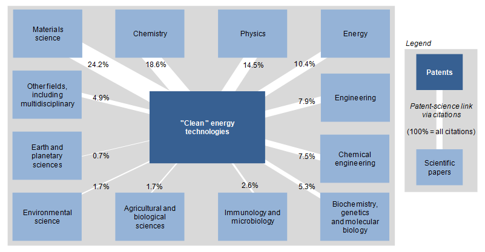

Patent data - Knowledge diffusion and technological change
Citations of other patents or the non-patent literature (notably scientific publications) are useful in quantifying knowledge transfers across organisations (e.g. company to company or university to industry), geographical regions or technology fields, as well as capturing knowledge spillovers from specific inventing entities (e.g. multinational to domestic firms or from public research centres to industry). Patents are a reliable and direct measure of knowledge transfer because they provide a detailed description of how the inventions have been made and the prior art. Patent citations point to the use of previous inventions in new inventions, which makes it possible to identify the influence of particular inventions or specific sets of inventions and map their diffusion in the economy. Yet patent and non-patent citations are in some cases a “noisy signal” of knowledge flows.
Characteristics of patent data
Knowledge spillovers in technology
Backward citations—citations to previous patent documents—can help to track knowledge spillovers in technology. They make it possible to estimate the curve of obsolescence of technologies and the diffusion of knowledge emanating from specific inventions to institutions, areas, regions, etc. Yet patent and non-patent citations are in some cases a “noisy signal” of knowledge flows, as the inventor of the citing patent is not always aware of the existence of the one cited in the search report, as citations are frequently given by examiners or by patent attorneys (e.g. Jaffe, Trajtenberg and Fogarty, 2000). As an example, in a survey of patentees and inventors, around one-half of all patent citations (in a cohort of 1 993 patentees at the USPTO) were found not to correspond to any perceived communication, or even to a perceptible technological relationship between the inventions (e.g. Jaffe Trajtenberg and Fogarty, 2000).
Technological cumulativeness is defined by the frequency of self-citation of patents produced by a company’s prior research. The identification of self-citation (applicant/assignee) has important implications, among other things for the study of spillovers: presumably citations to patents that belong to the same assignee represent transfers of knowledge that are mostly internalised, whereas citations to patents of “others” are closer to the pure notion of (diffused) spillovers. A common measure of cumulativeness at the level of the company is the sum of backward citations made to patents the firm owns over the total patents owned by the firm (at a given time t). According to Malerba and Orsenigo (1995), cumulativeness implies that leading innovators have an edge over laggards and the former may continue to lead in the future. It is more convenient to exclude self-citations (when information on consolidated patent data by applicant is available) when investigating the knowledge transfer and/or citation impact of inventions.
Information provided in patent data for science linkage indicators
Science linkage indicators are based on counts of references to the non-patent literature considered as scientific. The identification of “scientific” non-patent references provides insights into technologies that are closer to scientific R&D, and are thus more dependent on the progress of scientific knowledge. There is some recogni¬tion that non-patent references are useful for investigating the interplay between science and technology. The average level of non-patent references has frequently been used as a proxy for quantifying the relationship of a technology field with a scientific domain (Narin et al., 1997; Meyer, 2000; Verbeek et al., 2002). The more scientific references are found in patents, the closer the technology is considered to be to basic research. The analysis of science linkages in patents can be extended to important policy topics, notably the influence of science on new emerging technology domains or the value of science for industry (e.g. the impact on the economic value of companies).
However, non-patent references need to be treated with caution and some contextual elements should be taken into account when interpreting these indicators. Differences among patent offices in terms of examination procedures may influence the number and type of references cited. At the European Patent Office (EPO), as references come essentially from the examiner’s revision of the prior art, it has been argued that citations rarely reflect or coincide with the science used by inventors. Other researchers indicate that non-patent references rarely represent a unidirectional direct link to science and that it is difficult to establish causation between the citing patent and the cited article (Tijssen, 2002).Non-patent literature (NPL) not only consists of peer-reviewed scientific papers but also includes other types of publications: conference proceedings; databases (DNA structures, gene sequences, chemical compounds, etc.); and other relevant literature (translation guides, statistical manuals, etc.). References to non-scientific documents, such as “patent abstracts”, and commercial online patent database services should be removed for the purposes of analysis of science linkage in patents.
Methodological approaches to developing science linkage indicators
Once non-patent references with a scientific content have been identified, the influence of science can be disentangled in a more substantive manner. With the aid of databases on scientific publication, scientific disciplines and affiliations of the authors and institutions can be linked to patent information. Linking the technology domain of the citing patent to the science field of the cited publication, for instance, results in matrices which represent the presence of specific scientific disciplines and relate them to different technological domains (Schmoch, 1997; Verbeek et al., 2002).
A simple indicator at the company level is the average number of science references cited on the front page of the company’s patents. Strong science linkages indicate that a company is building its technology on advances in science (“closeness to science”). High-technology companies tend to have more science linkages than their competitors and science linkages have been found to be predictive of a company’s stock market performance (e.g. Nagaoka, 2007).
Policy questions and patent indicators
Policy questions
The analysis of patent citations can be extended to important policy questions such as:
- The measurement of knowledge flows or spillovers (e.g. Jaffe, Trajtenberg and Henderson, 1993).
- The influence of science on new emerging technology domains or the value of science for industry (e.g. the impact on the economic value of companies).
Examples of indicators
Figure 1 provides an example of a patent indicator to track technology transfer while Figure 2 displays “linkages” in “clean” energy technologies.
Figure 1: Technology transfers to selected BRIICS, 2005-07
Share of patents by origin of inventor and patent office of destination

Source: OECD calculations based on the Worldwide Patent Statistical Database, EPO, April 2011; map source: ARTICQUE© - all rights reserved.
1. The data refer to claimed priorities, i.e. patents for which protection has been requested at at least two patent offices. Patent counts are based on the earliest priority date, the inventor's country of residence and selected intellectual property offices in the BRIICS area, using fractional counts.
2. Figures for Brazil, the Russian Federation and South Africa are underestimated.
Figure 2: The innovation-science link in "clean" energy technologies, 2000-09
Share of scientific fields cited in total non-patent literature cited in patents for "clean" energy technologies

Source: OECD (2011a), “OECD Science, Technology and Industry Scoreboard 2011”, http://www.oecd-ilibrary.org/sites/sti_scoreboard-2011-en/01/04/index.html?contentType=&itemId=/content/chapter/sti_scoreboard-2011-9-en&containerItemId=/content/serial/20725345&accessItemIds=/content/book/sti_scoreboard-2011-en&mimeType=text/html; OECD calculations, based on Scopus Custom Data, Elsevier, December 2010 and EPO, Worldwide Patent Statistical Database, April 2011.
Note: The data refer to a set of patents published by the EPO, the USPTO or through the Patent Co-operation Treaty (PCT) route. Patents cover technologies or applications for mitigation or adaptation with respect to climate change.
References
- EPO (2011), “Worldwide Patent Statistical Database”, European Patent Office, Munich.
- Jaffe, A. B., M. Trajtenberg and M.S. Fogarty (2000), “knowledge spillovers and patent citations: Evidence from a survey of inventors”, American Economic Review, Vol. 90/2, pp. 215–18.
- Jaffe, A. B., M. Trajtenberg and R. Henderson (1993), “geographic localization of knowledge spillovers as evidenced by patent citations”, Quarterly Journal of Economics, No. 108, pp. 577–98.
- Malerba, F. and L. Orsenigo (1995), “Schumpeterian patterns of innovation”, Cambridge Journal of Economics, Vol. 19/1, pp. 47–65.
- Meyer, M. (2000), “Does science push technology? Patents citing scientific literature”, Research Policy, Vol. 29/3, pp. 409–34.
- Nagaoka, S. (2007), “Assessing the R&D management of a firm in terms of speed and science linkage: Evidence from the U.S. patents”, Journal of Economics and Management Strategy, Vol. 16/1. pp. 129–56.
- Narin, F., K. Hamilton and D. Olivastro (1997), “The increasing linkage between U.S. technology and public science”, Research Policy, No. 26, pp. 317–30.
- OECD (2011a), OECD Science, Technology and Industry Scoreboard 2011, OECD Publishing, Paris. doi: 10.1787/sti_scoreboard-2011-en
- OECD (2011b), The Invention and Transfer of Environmental Technologies, OECD Studies on Environmental Innovation, OECD Publishing, Paris.
- OECD (2010), Measuring Innovation: A New Perspective, OECD Publishing, Paris. doi: 10.1787/9789264059474-en
- OECD (2009), OECD Patent Statistics Manual, 6.3; 6.5.2; 6.6, OECD Publishing, Paris. http://dx.doi.org/ [1] 10.1787/9789264056442-en
- Schmoch, U. (1997), “Indicators and the relations between science and technology”, Scientometrics, Vol. 38/1, pp. 103–16.
- Tijssen, R. J. W. (2002), “Science dependence of technologies: Evidence from inventions and their inventors”, Research Policy, No. 31, pp. 509–26.
- Verbeek, A., K. Debackere and M. Luwel (2002), “Science cited in patents: A geographic ‘flow’ analysis of bibliographic citation patterns in patents”, Scientometrics, Vol. 58/2, pp. 241–63 (2003).